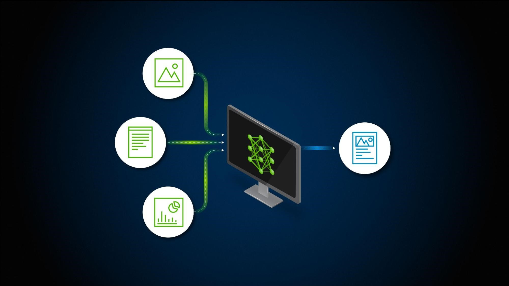

AI agents & automation
n8n automation workflows, a machine learning model and a retrieval-augmented generation (RAG) system.
- Type
- Workflows, machine learning and AI
- Built with
- Setup
- n8n runs locally in Docker
I'm an intermediate n8n user, building more complex workflows over time. I work with core nodes like HTTP requests and data transformation, connect common apps, and I'm now exploring advanced features to automate more of my processes.
I also have a strong background in Python and machine learning, which I use to add AI features to custom websites and applications.
What is n8n?
n8n is a workflow automation tool. You can build workflows with code or by dragging and dropping nodes, and host them on your own server or in the cloud. It's built for multi-step AI agents and connects AI to your own data and over 500 integrations.
Read more on n8n.ion8n workflows
AI agents and automations that connect everyday apps.
-
Expense tracker
Text your daily expenses to an AI agent on Telegram, and it logs them straight into your Google Sheet.
-
Sports news
An AI agent that fetches fresh posts from your favorite sports news sources, on a schedule or on demand.
-
Gmail cleaner
Sorts your inbox by importance using your own criteria, so emails don't pile up every week.
-
Alfred AI
Your personal AI butler. Chat with him by voice or text on Telegram, and he sends emails or updates your Google Sheets.
-
AI ticketing system
Reads incoming support emails and forms, sorts them by issue type and routes each one to the right person or team for a faster fix.
Machine learning
A model that recognizes patterns in medical images.
-
Tumor detector
Analyzes MRI scans to identify potential brain tumors and classify them by their visual characteristics.
AI
Applications built around large language models.
-

FileFlow: RAG system
Combines a vector database with a large language model to answer questions about uploaded files, such as PDFs and Word documents. Visit the following link: https://ka.nz/ai/houssamsaidi